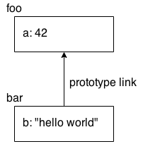

本文主要介绍一下 JavaScript 的变量命名规则、简单使用方式及一些函数的使用。
# 命名规则
在 JavaScript 中，变量名称（包括函数名称）必须是有效的标识符。当你考虑使用 Unicode 等非传统字符时，标识符中有效字符约束规则可能会有点复杂。但是，如果你只考虑典型的 ASCII 中定义的字母、数字等其他字符时，则规则还是很简单的。
小测试，先看一下汉字命名是否可以。
（1）定义函数
function 哈哈(){ | |
return "123"; | |
} | |
var z = 哈哈(); | |
console.log(z); // "123" |
（2）定义变量
var 太阳大不大 = "大"; | |
console.info(太阳大不大); // "大" |
可见汉字命名是可以的，但是不推荐，原因大家都懂。
看一下具体的命名规则（适用于属性名称与变量标识符）：
- 标识符必须以 a-z，A-Z，$ 或_开头。它可以包含任何这些字符加数字 0-9。
- 某些单词不能用作变量，但可以作为属性名称。这些单词被称为 “保留字”，包括 JS 关键字（for，in，if 等）以及 null，true 和 false。
# 变量作用域
就是简单讲，你定义一个 var 指定的变量，如果在函数内，则作用域就是当前函数，如果是所有函数外部，那么就是全局作用域。
# 变量提升（Hoisting）
无论 var 声明出现在哪一个范围内，该声明的变量被认为属于当前整个范围，并且在整个范围内都可以访问。 就是说无论在哪个位置定义变量，他都会提升到作用域最前端。
换句话说，当一个 var 声明在属性被 “移动” 到它的封闭范围的顶部时，这种行为就被称为提升。
可以看一个例子：
var a = 2; | |
foo(); // works because `foo()` | |
// declaration is "hoisted" | |
function foo() { | |
a = 3; | |
console.log( a ); // 3 | |
var a; // declaration is "hoisted" | |
// to the top of `foo()` | |
} | |
console.log( a ); // 2 |
注意，变量提升并不通用，也不是一个好主意，依靠变量提升来使变量的使用范围比其 var 变量声明的范围更早（会出现 undefined 等一系列不可预测问题），这可能会给程序制造混乱，难以理解。使用函数声明这种方式反而更为普遍和容易被接受，就像我们在正式声明之前出现的 foo（）调用一样。
如果还是不理解什么是变量上升，请移步这里。
# 嵌套作用域
当你声明一个变量时，此时，这个变量就会在当前作用域中生效，包括当前作用域中的函数及其嵌套的函数，这类似一种继承关系，son 可以访问 foo，然而 foo 却不能访问 son
function foo() { | |
var a = 1; | |
function bar() { | |
var b = 2; | |
function baz() { | |
var c = 3; | |
console.log( a, b, c ); // 1 2 3 | |
} | |
baz(); | |
console.log( a, b ); // 1 2 | |
} | |
bar(); | |
console.log( a ); // 1 | |
} | |
foo(); |
如果 foo 想要访问 son，则会出现异常，但是有时我们想让 foo 访问 son 中变量，于是有了下面这种定义
function foo() { | |
a = 1; // `a` not formally declared | |
} | |
foo(); | |
a; // 1 -- oops, auto global variable :( |
这种单纯地想要实现可以访问的方式，非常 bad 的，虽然实现了，但是不提倡，是禁止的。记住，任何时刻，都要正式地声明你的变量。
除了在函数级别为变量创建声明外，ES6 还允许使用 let 关键字将变量声明为属于各个块（{..}）。除了一些微妙的细节之外，范围规则的行为与我们刚刚看到的函数大致相同：
function foo() { | |
var a = 1; | |
if (a >= 1) { | |
let b = 2; | |
while (b < 5) { | |
let c = b * 2; | |
b++; | |
console.log( a + c ); | |
} | |
} | |
} | |
foo(); // 5 7 9 |
如上，b 声明在 if 语句代码块，所以仅在 if 中生效，而 c 在 while 代码块中，固仅在 while 中生效，这是一种更细粒度的作用域控制，推荐使用，可以让你更好地管理你的变量。
# 条件语句
首先我们看一下 if else 语句，这个很常用，然而有时你会发现，如果条件很多，你不得不使用很多次 if..else..if...，如下
if (a == 2) { | |
// do something | |
} | |
else if (a == 10) { | |
// do another thing | |
} | |
else if (a == 42) { | |
// do yet another thing | |
} | |
else { | |
// fallback to here | |
} |
这时我们会觉得很啰嗦（verbose），此时可以尝试使用 switch
switch (a) { | |
case 2: | |
// do something | |
break; | |
case 10: | |
// do another thing | |
break; | |
case 42: | |
// do yet another thing | |
break; | |
default: | |
// fallback to here | |
} |
但是注意，在使用 switch 时，必要时必须存在 break 做结束，及时跳出，否则当你的条件满足第一个 case 时，她还会跳到下一个 case 中，这会执行下一个 case 的操作，会造成意外，但是某些时候我们会需要这样做，那便可以丢弃 break。
var a = 2; | |
switch (a) { | |
case 2: | |
console.log("haha"); | |
case 10: | |
console.log("hehe"); | |
break; | |
case 42: | |
console.log("xixi"); | |
break; | |
default: | |
console.log("你笑啥"); | |
} |
上面的例子会打印俩值，一个是 "haha", 一个是 "hehe",
当然，JavaScript 中还有一种三元运算符，即
var a = 42; | |
var b = (a > 41) ? "hello" : "world"; | |
// similar to: | |
// if (a > 41) { | |
// b = "hello"; | |
// } | |
// else { | |
// b = "world"; | |
// } |
条件运算符不一定是在赋值中使用，但这绝对是最常用的用法。
# 严格模式（Strict Mode）
ES5 为语言增加了一种 “严格模式”，从而加强了某些行为的规则。一般来说，这些限制被认为是保持代码更安全和更合适的方式。
另外，遵循严格的模式使得你的代码通常可以被引擎更好地优化。
严格模式是代码的一大改进，我们应该将其用于所有程序。 我们可以选择严格模式来执行单个函数或整个文件，具体取决于编译指示的位置：
function foo() { | |
"use strict"; | |
// this code is strict mode | |
function bar() { | |
// this code is strict mode | |
} | |
} | |
// this code is not strict mode |
和下面比较一下
"use strict"; | |
function foo() { | |
// this code is strict mode | |
function bar() { | |
// this code is strict mode | |
} | |
} | |
// this code is strict mode |
严格模式不允许省略 var 而直接定义全局变量，如下会提示异常
function foo() { | |
"use strict"; // turn on strict mode | |
a = 1; // `var` missing, ReferenceError | |
} | |
foo(); |
严格模式是 JavaScript 未来发展的方向，一定要重视在使用严格模式时遇到的异常，因为这些都是以后 JavaScript 将要改变的。
# 将函数作为变量值
看两个例子
var foo = function() { | |
// .. | |
}; | |
var x = function bar(){ | |
// .. | |
}; |
上面两个例子有区别，第一个 foo 指向的是匿名函数，而后一个不是，需要注意的是，尽管匿名函数赋值的情况还是比较多，但我们更推荐为其提供指定命名的赋值方式，也就是第二种。
# 立即执行函数表达式（Immediately Invoked Function Expressions (IIFEs)）
或称立即执行函数，就是说直接可以自动执行，并输出或提供一个信息反馈。如
(function foo(){ | |
console.log( "Hello!" ); | |
})(); |
上面函数执行后，会直接打印值 "Hello！"
然而普通的函数呢？
function foo(){ | |
console.log("Hello!"); | |
} |
她是不会自己去执行的，需要赋予一个变量，或者等待着被调用。
可以对比一下下面的普通函数与立即执行函数：
function foo() { .. } | |
// `foo` function reference expression, | |
// then `()` executes it | |
foo(); | |
// `IIFE` function expression, | |
// then `()` executes it | |
(function IIFE(){ .. })(); |
在变量作用域上，立即执行函数中定义的变量和外部变量是相互独立的，互不影响
var a = 42; | |
(function IIFE(){ | |
var a = 10; | |
console.log( a ); // 10 | |
})(); | |
console.log( a ); // 42 |
立即执行函数可以包含返回值。
var x = (function IIFE(){ | |
return 42; | |
})(); | |
x; // 42 |
# 闭包（Closure）
正常情况下，函数内部可以直接读取全局变量，而在函数外部自然无法读取函数内的局部变量（除了没有 var 修饰的全局变量），而我们有时后又需要从外部获取某个局部变量，那么我们如何从外部读取局部变量呢？
我们可以尝试着做这样一个操作：在函数的内部，再定义一个函数
为什么呢？
先看个例子：
function foo(){ | |
var m = 123; | |
function bar(){ | |
return m; | |
} | |
return bar; | |
} | |
var result = foo(); | |
result(); |
上面 foo 函数中定义的 bar 函数，其实就是一个闭包。
大家可以将闭包看作是一种 “被记忆” 的方式，即使函数运行完毕，也可以继续访问函数的作用域（变量）。有时候这还是会让我们很疑惑，可以再看一下下面的例子：
function makeAdder(x) { | |
// parameter `x` is an inner variable | |
// inner function `add()` uses `x`, so | |
// it has a "closure" over it | |
function add(y) { | |
return y + x; | |
}; | |
return add; | |
} | |
// `plusOne` gets a reference to the inner `add(..)` | |
// function with closure over the `x` parameter of | |
// the outer `makeAdder(..)` | |
var plusOne = makeAdder( 1 ); | |
// `plusTen` gets a reference to the inner `add(..)` | |
// function with closure over the `x` parameter of | |
// the outer `makeAdder(..)` | |
var plusTen = makeAdder( 10 ); | |
plusOne( 3 ); // 4 <-- 1 + 3 | |
plusOne( 41 ); // 42 <-- 1 + 41 | |
plusTen( 13 ); // 23 <-- 10 + 13 |
当你执行过后，发现 plusOne (3) 的值为 4，plusOne ( 41 ) 的值是 42，plusTen ( 13 ) 的值是 23，
- 当我们调用 makeAdder（1）时，我们返回一个对它的内部 add（..）的引用，它将 x 记为 1. 我们把这个函数引用称为 plusOne（..）。
- 当我们调用 makeAdder（10）时，我们得到另一个它的内部 add（..）的引用，它将 x 记为 10. 我们称这个函数为引用 plusTen（..）。
- 当我们调用 plusOne（3）时，它将 3（它的内部 y）加到 1（被 x 记住），我们得到 4 结果。
- 当我们呼叫加十（13）时，它将十三（它的内部 y）加到 10（被 x 记住），结果我们得到 23。
闭包有下面两个用途，第一个我们在上面已经说明了：
- 一个是前面提到的可以读取函数内部的变量
- 另一个就是让这些变量的值始终保持在内存中（小心也会内存泄漏哦）
如果还是不理解，可以参考阮一峰大佬的博客。
# 模块化
先看一个例子
function User(){ | |
var username, password; | |
function doLogin(user,pw) { | |
username = user; | |
password = pw; | |
// do the rest of the login work | |
} | |
var publicAPI = { | |
login: doLogin | |
}; | |
return publicAPI; | |
} | |
// create a `User` module instance | |
var fred = User(); | |
fred.login( "fred", "12Battery34!" ); |
User（）函数作为一个供外部调用的函数，它保存着变量的用户名和密码，以及内部的 doLogin（）函数。这些都是该用户模块的内部细节，无法从外部访问。
警告：
- 我们不打算在这里调用并产生一个 new User（），尽管事实上大多数读者可能看起来更常见。
- User（）只是一个函数，不是要实例化的类，所以它只能算是正常调用。使用 new 是不合适的，并且浪费资源。
- 我们首先执行 User（），此时会创建 User 函数的一个实例 - 创建一个全新的作用域，从而创建每个存在此作用域的内部变量 / 函数的全新副本。我们将这个实例分配给 fred。如果我们再次运行 User（），我们会得到一个完全独立于 fred 的新实例，这是不可取的。
- 内部的 doLogin（）函数有一个关于用户名和密码的闭包，这意味着即使在 User（）函数完成运行后，它仍然保留对它们的访问。
- publicAPI 是一个拥有一个属性 / 方法的对象，login 是一个对 doLogin（）函数的引用。当我们从 User（）返回 publicAPI 时，它成为我们调用的 fred 的实例。 此时，外部的 User（）函数已经完成执行。
- 通常情况下，你会认为像用户名和密码的内部变量已经消失。但是在这里他们没有，因为在 login（）函数中有一个闭包让它们活着。 这就是为什么我们可以调用 fred.login（..） - 就像调用内部的 doLogin（..）一样 - 它仍然可以访问用户名和密码的内部变量。
# this 标识
在 JavaScript 中，如果一个函数里面有这个引用，那么这个引用通常指向一个对象。但是指向哪个对象取决于函数的具体调用方式。
如：
function foo() { | |
console.log( this.bar ); | |
} | |
var bar = "global"; | |
var obj1 = { | |
bar: "obj1", | |
foo: foo | |
}; | |
var obj2 = { | |
bar: "obj2" | |
}; | |
// -------- | |
foo(); // "global" | |
obj1.foo(); // "obj1" | |
foo.call( obj2 ); // "obj2" | |
new foo(); // undefined |
下面解释一下代码：
- 这段代码中，foo（）的最终设置为非严格模式下的全局对象，所以 “global” 是此调用时的结果。而如果在严格模式下，this.bar 其实是 undefined 的，并且在访问 bar 属性时会出错 。
- obj1.foo（）将其设置为 obj1 对象。
- foo.call（obj2）将其设置为 obj2 对象。
- new foo（）将其设置为一个全新的空对象。
# 原型机制
JavaScript 中的原型机制比较复杂，我们这里只瞄一眼即可。
假设我们拥有一个对象，当我们在对象上引用另一个属性时，如果该属性不存在，JavaScript 将自动使用该对象的内部原型引用来查找另一个对象以查找属性。当属性缺失时，我们可以把其看作是后备资源。
考虑下下面这个例子：
var foo = { | |
a: 42 | |
}; | |
// create `bar` and link it to `foo` | |
var bar = Object.create( foo ); | |
bar.b = "hello world"; | |
bar.b; // "hello world" | |
bar.a; // 42 <-- delegated to `foo` |
可以想象成下面这幅图去理解

a 属性实际上并不存在于 bar 对象上，但是因为 bar 是与 foo 原型链接的，所以 JavaScript 会自动回退到在 foo 对象上寻找它的位置。
这种联系可能看起来很奇怪。这种方式引发的最常见的弊端就是滥用 - 就是试图用 “继承” 模仿 / 伪造一个 “类” 机制。
但更自然的应用原型机制的方式是一种称为 “行为委托” 的模式，在这种模式中，你可以特意设计你的链接对象，以便能够将所需行为的一部分委托给另一个。